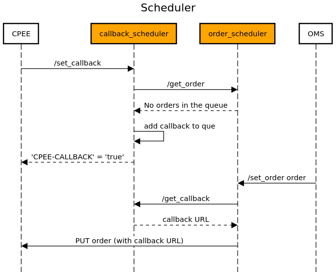

Schedulers¶
The schedulers are the heart of the order system. They manage the callbacks and the orders that arrive from the CPEE and the user. The figure below describes the interaction between the different modules and the CPEE.

callback_scheduler¶
The
callback_schedulermodule is designed to provide interaction with the CPEE by managing callback URLs. It is integrated closely with the ``order_scheduler’’ module to allow seamless processing of new orders and callbacks. The module provides a mechanism for registering new callback URLs, which are then used to notify the CPEE of new orders. If no new orders are available when a callback is registered, the callback URL is placed in a thread-safe queue until it can be processed. This module includes functionality to add and retrieve callbacks to the queue, allowing efficient communication with the CPEE.The
callback_schedulersupports a RESTful API implemented using Flask. See below for detailed documentation of its API endpoints and functionality.API Endpoints:
Set Callback
URL:
/set_callback(configurable viaconf_callback.URL_SET)Method:
GETDescription: Adds a new callback URL to the queue if there are no immediate orders to process. If an order is available, the order data is sent back immediately.
Headers: Must include
Cpee-Callbackwith the callback URL.Success Response:
If an order is available:
HTTP/1.1 200 OK Content-Type: application/json { "id": "...", "orderbot_id": -1, "status": "Order Initiated" }If no order is available and the callback is queued:
HTTP/1.1 200 OK Content-Type: application/json CPEE-CALLBACK: true { "message": "Callback URL added to the queue" }Error Response:
Code: 400 (Bad Request), Content:
{"error": "No Cpee-Callback header found"}Code: 500 (Internal Server Error), Content:
{"error": "<error_message>"}Get Callback
URL:
/get_callback(configurable viaconf_callback.URL_GET)Method:
GETDescription: Retrieves and removes the next callback URL from the queue if available.
Success Response: If a callback URL is available:
HTTP/1.1 200 OK Content-Type: application/json { "callback_url": "CPEE Callback URL" }If no callback URL is available:
HTTP/1.1 204 OK Content-Type: application/json { "message": "There are currently no callbacks available" }Error Response:
Code: 204 (No Content), Content:
{"message": "There are currently no callbacks available"}Get All Callbacks (Debug)
URL:
/get_all_callbacks(configurable viaconf_callback.URL_DEBUG)Method:
GETDescription: Returns a list of all callback URLs currently in the queue. This endpoint is intended for debugging purposes.
Success Response:
HTTP/1.1 200 OK Content-Type: application/json { "all_callbacks": "[<callback_url_1>, <callback_url_2>, ...]" }Module Implementation:
- callback_scheduler.get_all_callbacks()¶
Returns all the callbacks currently in the queue (for debugging purposes) :return: All the callbacks currently in the queue
- callback_scheduler.get_callback()¶
Returns a callback URL from the queue if available and removes it from the queue :return: Callback URL if available, message indicating no callbacks available otherwise
- callback_scheduler.get_order()¶
Fetches an order from the Order Service (if available) :return: Order data if available, None otherwise
- callback_scheduler.set_callback()¶
Adds a callback to the queue if there are no orders available, otherwise it returns the order data :return: Order data if available, message indicating the callback was added to the queue otherwise
order_scheduler¶
The
order_schedulermodule is designed to provide interaction between theorder_management_systemand thecallback_scheduler. The module provides a mechanism for registering a new orders or getting new set orders from a que. After registering a new order, it first checks thecallback_schedulerif there are currently any callback URLs available. If so it fetches a new callback URL and sends the order back to the CPEE using the callback URL. If there are currently no callback URLs available, it stores the new order inside a thread safe que until the order can be further processed by thecallback_scheduler. This module includes functionality to add and retrieve orders to the queue, allowing efficient communication with the CPEE.The
order_schedulersupports a RESTful API implemented using Flask. See below for detailed documentation of its API endpoints and functionality.API Endpoints:
Set Order
Endpoint:
/set_order(configurable viaconf_order.URL_SET)Method:
POSTDescription: Adds a new order to the queue. If a callback URL is available, the order is sent directly to the callback URL.
Request Body: The expected JSON payload containing the order data:
{ "drink": "Gin Tonic", "size": "Medium", "name": "John Doe" }
- Success Response:
If the order is added to the queue:
HTTP/1.1 200 OK Content-Type: application/json { "message": "Order added to the queue", "order_id": 1 }If the order is sent to a callback URL:
HTTP/1.1 200 OK Content-Type: application/json { "message": "Order sent to callback URL", "order_id": 1 }Error Response:
If no order data is provided or data is incomplete:
HTTP/1.1 400 Bad Request Content-Type: application/json { "error": "No order data provided/Missing order details" }If there is an error with the request to the callback URL:
HTTP/1.1 500 Internal Server Error Content-Type: application/json { "error": "Error message describing the issue" }Get Order
Endpoint:
/get_order(configurable viaconf_order.URL_GET)Method:
GETDescription: Retrieves the next order from the queue and removes it.
- Success Response:
If an order is available:
HTTP/1.1 200 OK Content-Type: application/json { "order_id": 1, "drink": "Gin Tonic", "size": "Medium", "name": "John Doe", }If the queue is empty:
HTTP/1.1 204 No Content Content-Type: application/json { "message": "No orders in the queue" }Get All Orders (Debug)
Endpoint:
/get_all_orders(configurable viaconf_order.URL_DEBUG)Method:
GETDescription: Retrieves all orders currently in the queue. Intended for debugging purposes.
Success Response:
Allways returns a list of all orders currently in the queue.
HTTP/1.1 200 OK Content-Type: application/json { "all_orders": [ { "order_id": 1, "drink": "Gin Tonic", "size": "Medium", "name": "John Doe", }, "..." ] }Module Implementation:
- order_scheduler.get_all_orders()¶
Fetches all orders from the queue (for debugging purposes) :return: A list of all orders in the queue
- order_scheduler.get_callback_url()¶
Fetches the callback URL from the callback service (if available) :return: The callback URL or None if not available
- order_scheduler.get_order()¶
Fetches the next order from the queue and removes it :return: The next order in the queue or a message if the queue is empty
- order_scheduler.set_order()¶
Adds a new order to the queue or sends it to the callback URL if available :return: A response message and status code